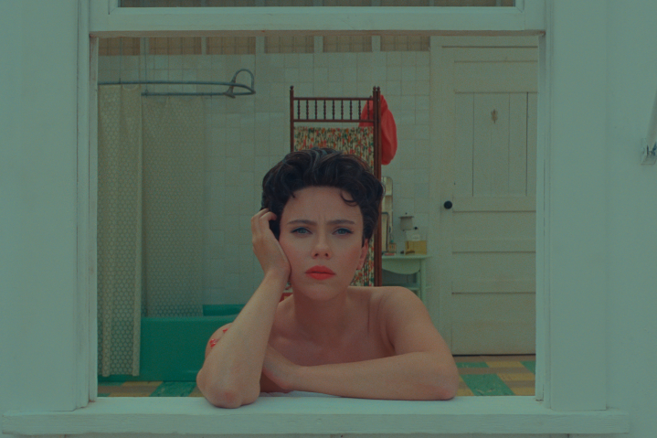
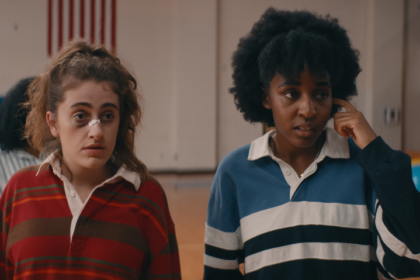
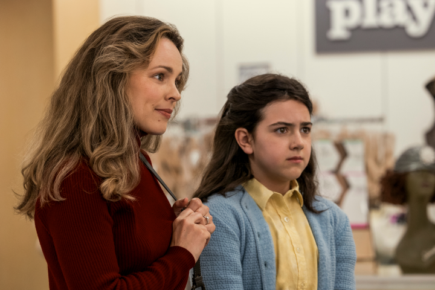
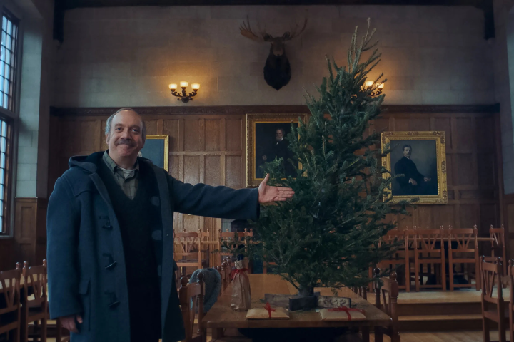
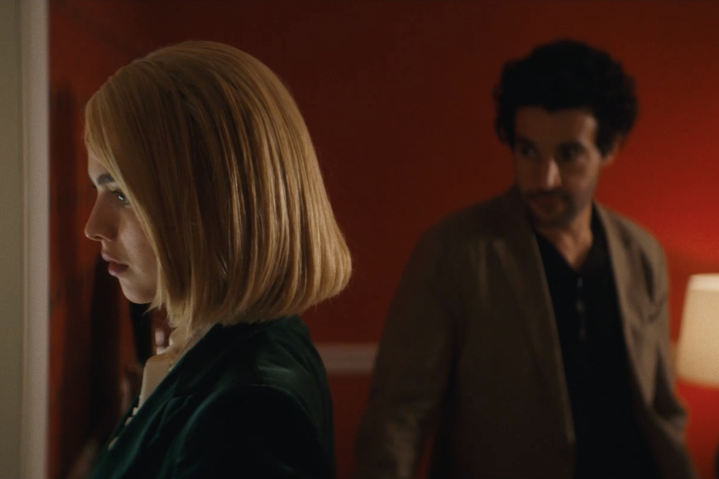

| Top 5 |
 |
Poor Things is a peculiar watch that sticks with viewers long after the credits roll. It tells the story of Victorian young woman Bella Baxter (Emma Stone in one of her most memorable and possibly challenging roles), who is resurrected by a scientist (Willem Dafoe) following her suicide. She then runs off with a lawyer (Mark Ruffalo) to embark on a self-discovery and sexual liberation odyssey. |
 |
Chronicling Margot Robbie's Stereotypical Barbie journey from Barbieland to the real world after confronting a sudden identity crisis, Greta Gerwig's most recent film (and the highest-grossing of the year so far, crossing $1 billion worldwide) depicts, through a truly entertaining narrative and incredible production design, the importance of self-discovery. |
|  |
Wes Anderson's latest dramedy, Asteroid City, is one of his best efforts yet. A nesting doll film about a collection of kids and adults who end up quarantined in an American desert town after it’s visited by an alien, Asteroid City feels like the artistic culmination of a phase of Anderson’s career that began with The Grand Budapest Hotel. |
|  |
A coming-of-age comedy about a pair of high schoolers (played by Rachel Sennott and Ayo Edebiri) who decide to start a female fight club in order to hook up with their cheerleader crushes, Bottoms is a hysterical send-up of American high school culture that isn’t afraid to go to even hornier and more violent places than most viewers will expect. |
|  |
Speaking of films that could have felt commonplace 40 or 50 years ago, Are You There, God? It’s Me, Margaret is an astonishingly gentle, frank comedy. Produced by James L. Brooks and written and directed by The Edge of Seventeen filmmaker Kelly Fremon Craig, it’s a film that is so tuned into the emotions and anxieties of its characters that it’s repeatedly able to make you burst out laughing in one moment and tear up in the next. |
|  |
Alexander Payne’s long-awaited follow-up to 2017’s Downsizing is a cozy yet prickly dramedy that proves, once again, why Paul Giamatti is one of the most versatile performers on the planet. The actor leads The Holdovers as a cranky ancient history teacher at a Massachusetts boarding school who ends up forced to spend his holidays on campus with a mourning cafeteria administrator (played by Da’Vine Joy Randolph) and a troubled student (Dominic Sessa). Its premise sets it up to deliver more than a few dramatic moments, and The Holdovers does exactly that, but the emotional darkness of its story never overwhelms it. |
|  |
Sanctuary is one of the year’s unlikeliest comedies. On paper, a film about a dominatrix who tries to blackmail her nepo baby client into compensating her for the confidence she’s helped him build might not scream “laugh-out-loud funny.” Sure enough, though, Sanctuary is one of 2023’s darkest and most depraved delights, a sexually charged farce that’s held together by director Zachary Wigon’s crafty blocking and Margaret Qualley (Poor Things) and Christopher Abbott’s go-for-broke, unhinged lead performances. It’s shocking, gross, occasionally sexy, and sweeter than anyone might rightly expect it to be. |